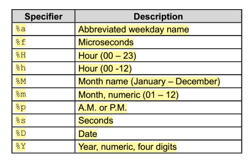

SQL AVG() Function
The AVG() function returns the average value of a numeric column.
Syntax:-
SELECT AVG(column_name)
FROM table_name
WHERE condition;
FROM table_name
WHERE condition;
SQL COUNT() Function
The COUNT() function returns the number of rows that matches a specified criterion.
Syntax:-
SELECT COUNT(column_name)
FROM table_name
WHERE condition;
FROM table_name
WHERE condition;
SQL Count Distinct Function
By using the DISTINCT keyword in a function called COUNT, we can return the number of different countries.
Syntax:-
SELECT COUNT(DISTINCT column_name)
FROM table_name
WHERE condition;
FROM table_name
WHERE condition;
SQL GROUP_CONCAT() function
It is used to concatenate and aggregate values from multiple rows within a specific column into a single string.
Syntax:-
SELECT GROUP_CONCAT(expressions)
FROM table_name;
FROM table_name;
SQL MAX() Function
The MAX() function returns the largest value of the selected column.
Syntax:-
SELECT MAX(column_name)
FROM table_name
WHERE condition;
FROM table_name
WHERE condition;
SQL STD() Function
MySQL STD() function returns the population standard deviation of expression. The standard deviation is a statistical measure that quantifies the amount of variation or dispersion in a dataset.
Syntax:-
SELECT STD(expressions)
FROM table_name
WHERE condition;
FROM table_name
WHERE condition;
SQL SUM() Function
The SUM() function returns the total sum of a numeric column.
Syntax:-
SELECT SUM(column_name)
FROM table_name
WHERE condition;
FROM table_name
WHERE condition;
SQL VARIANCE() Function
The VARIANCE() function returns the population standard variance of an expression. It considers the entire dataset rather than just a sample. Variance is a statistical measure that indicates the spread or dispersion of a dataset.
Syntax:-
SELECT VARIANCE(column_name)
FROM table_name
WHERE condition;
FROM table_name
WHERE condition;
SQL MIN() Function
The MIN() function returns the smallest value of the selected column.
Syntax:-
SELECT MIN(column_name)
FROM table_name
WHERE condition;
FROM table_name
WHERE condition;
SQL STDDEV() Function
MySQL STDDEV() function returns the population standard deviation of expression. The standard deviation is a statistical measure that quantifies the amount of variation or dispersion in a dataset.
Syntax:-
SELECT STDDEV(expressions)
FROM table_name
WHERE condition;
FROM table_name
WHERE condition;
SQL STDDEV_POP() Function
MySQL STDDEV_POP() function calculate the population standard deviation of expression and return square root of the expressions.
Syntax:-
SELECT STDDEV_POP(expressions)
FROM table_name
WHERE condition;
FROM table_name
WHERE condition;
SQL STDDEV_SAMP() Function
MySQL STDDEV_SAMP() function calculate the population sample standard deviation of expression.
Syntax:-
SELECT STDDEV_SAMP(expressions)
FROM table_name
WHERE condition;
FROM table_name
WHERE condition;
SQL VAR_POP() Function
MySQL VAR_POP() function returns the standard variance of expression.
Syntax:-
SELECT VAR_POP(expressions)
FROM table_name
WHERE condition;
FROM table_name
WHERE condition;
SQL VAR_SAMP() Function
MySQL VAR_SAMP() function returns the sample standard variance of expression.
Syntax:-
SELECT VAR_SAMP(expressions)
FROM table_name
WHERE condition;
FROM table_name
WHERE condition;
SQL ABS() Function
Return the absolute value of a number.
Syntax:-
SELECT ABS(number)
SQL ACOS() Function
Return the arc cosine of a number.
Syntax:-
SELECT ACOS(number)
SQL CEILING() Function
Return the smallest integer value that is greater than or equal to any number.
Syntax:-
SELECT CEILING(number)
SQL CONV() Function
Convert a number from numeric base system.
Syntax:-
SELECT CONV(number, from_base, to_base)
SQL COS() Function
Return the cosine of a number.
Syntax:-
SELECT COS(number)
SQL CRC32() function
Return the cyclic redundancy check value of a given string as a 32-bit unsigned value.
Syntax:-
SELECT CRC32(expression)
SQL COT() Function
Return the cotangent of a number.
Syntax:-
SELECT COT(number)
SQL DEGREES() Function
Convert the radian value into degrees.
Syntax:-
SELECT DEGREES(number)
SQL EXP() Function
Return e raised to the power of 1.
Syntax:-
SELECT EXP(number)
SQL FLOOR() Function
Return the largest integer value.
Syntax:-
SELECT FLOOR(number)
SQL LOG() Function
Return the natural logarithm.
Syntax:-
SELECT LOG(number)
SQL MOD() Function
Return the remainder.
Syntax:-
SELECT MOD(x, y)
SQL OCT() FUNCTION
OCT function is used to get the octal value of the specified number.
Syntax:-
SELECT OCT(number)
SQL PI() Function
Return the value of PI.
Syntax:-
SELECT PI()
SQL POWER() Function
returns the value of a number raised to the power of another number.
Syntax:-
SELECT POWER(x, y)
SQL RADIANS() Function
converts a degree value into radians.
Syntax:-
SELECT RADIANS(number)
SQL SIGN() function
Returns the sign of the specified number. It returns 1 if the number is positive, -1 if the number is negative and 0 for zero number.
Syntax:-
SELECT SIGN(number)
SQL SQRT() Function
Return the square root of a number.
Syntax:-
SELECT SQRT(number)
SQL TRUNCATE() Function
truncates a number to the specified number of decimal places.
Syntax:-
SELECT TRUNCATE(number, decimals)
SQL ASIN() Function
calculates the arc sine of a numeric value.
Syntax:-
SELECT ASIN(number)
SQL LOG10() Function
Returns the logarithm of the specified number to base 10.
Syntax:-
SELECT LOG10(number)
SQL LOG2() Function
Returns the natural logarithm of a number to base-2.
Syntax:-
SELECT LOG10(number)
SQL SIN() Function
Return the sine of a number.
Syntax:-
SELECT SIN(number)
SQL TAN() Function
Return the tangent of a number.
Syntax:-
SELECT TAN(number)
SQL ADDDATE() Function
The ADDDATE() function adds a time/date interval to a date and then returns the date.
Syntax:-
SELECT ADDDATE(date, INTERVAL value addunit)
SQL ADDTIME() Function
The ADDTIME() function adds a time interval to a time/datetime and then returns the time/datetime.
Syntax:-
SELECT ADDTIME(datetime, addtime)
SQL CURDATE() Function
The CURDATE() function returns the current date.
Syntax:-
SELECT CURDATE();
SQL CURTIME() Function
The CURTIME() function returns the current time.
Syntax:-
SELECT CURTIME();
SQL DATE_ADD() Function
The DATE_ADD() function adds a time/date interval to a date and then returns the date.
Syntax:-
SELECT DATE_ADD(date, INTERVAL value addunit);
SQL DATE() Function
The DATE() function extracts the date part from a datetime expression.
Syntax:-
SELECT DATE(expression);
SQL DATEDIFF() Function
The DATEDIFF() function returns the number of days between two date values.
Syntax:-
SELECT DATEDIFF(date1, date2);
SQL DATE_FORMAT() Function
The DATE_FORMAT() function formats a date as specified.
Syntax:-
SELECT DATE_FORMAT(date, format);

SQL DAY() Function
The DAY() function returns the day of the month for a given date (a number from 1 to 31).
Syntax:-
SELECT DAY(date);
SQL DAYNAME() Function
The DAYNAME() function returns the weekday name for a given date.
Syntax:-
SELECT DAYNAME(date);
SQL HOUR() Function
The HOUR() function returns the hour part for a given date (from 0 to 838).
Syntax:-
SELECT HOUR(datetime);
SQL MINUTE() Function
The MINUTE() function returns the minute part of a time/datetime (from 0 to 59).
Syntax:-
SELECT MINUTE(datetime);
SQL MONTH() Function
The MONTH() function returns the month part for a given date (a number from 1 to 12).
Syntax:-
SELECT MONTH(date);
SQL MONTHNAME() Function
The MONTHNAME() function returns the name of the month for a given date.
Syntax:-
SELECT MONTHNAME(date);
SQL NOW() Function
The NOW() function returns the current date and time.
Syntax:-
SELECT NOW();
SELECT CURRENT_TIMESTAMP();
SELECT LOCALTIME();
SELECT LOCALTIMESTAMP();
SQL SECOND() Function
The SECOND() function returns the seconds part of a time/datetime (from 0 to 59).
Syntax:-
SELECT SECOND(datetime);
SQL SEC_TO_TIME() Function
The SEC_TO_TIME() function returns a time value (in format HH:MM:SS) based on the specified seconds.
Syntax:-
SELECT SEC_TO_TIME(seconds);
SQL SYSDATE() Function
The SYSDATE() function returns the current date and time.
Syntax:-
SELECT SYSDATE();
SQL TIME() Function
The TIME() function extracts the time part from a given time/datetime.
Syntax:-
SELECT TIME(expression);
SQL TIMEDIFF() Function
The TIMEDIFF() function returns the difference between two time/datetime expressions.
Syntax:-
SELECT TIMEDIFF(time1, time2);
SQL WEEK() Function
The WEEK() function returns the week number for a given date (a number from 0 to 53).
Syntax:-
SELECT WEEK(date, firstdayofweek);
SQL WEEKOFYEAR() Function
The WEEKOFYEAR() function returns the week number for a given date (a number from 1 to 53).
Syntax:-
SELECT WEEKOFYEAR(date);
SQL YEAR() Function
The YEAR() function returns the year part for a given date (a number from 1000 to 9999).
Syntax:-
SELECT YEAR(date);
SQL CONVERT_TZ() Function
CONVERT_TZ() function in MySQL is used to convert the given DateTime from One time zone to another time zone. If the arguments are invalid, the function will return NULL.
Syntax:-
SELECT CONVERT_TZ (dt, from_tz,to_tz);
SQL DATE_SUB() Function
The DATE_SUB() function subtracts a time/date interval from a date and then returns the date.
Syntax:-
SELECT DATE_SUB(date, INTERVAL value interval);
SQL DAYOFMONTH() Function
The DAYOFMONTH() function returns the day of the month for a given date (a number from 1 to 31).
Syntax:-
SELECT DAYOFMONTH(date);
SQL DAYOFWEEK() Function
The DAYOFWEEK() function returns the weekday index for a given date (a number from 1 to 7).
Syntax:-
SELECT DAYOFWEEK(date);
SQL DAYOFYEAR() Function
The DAYOFYEAR() function returns the day of the year for a given date (a number from 1 to 366).
Syntax:-
SELECT DAYOFYEAR(date);
SQL EXTRACT() Function
The EXTRACT() function extracts a part from a given date.
Syntax:-
SELECT EXTRACT(part FROM date);